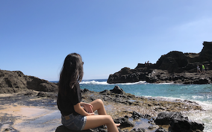
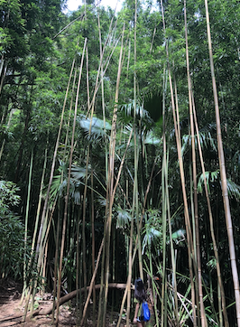
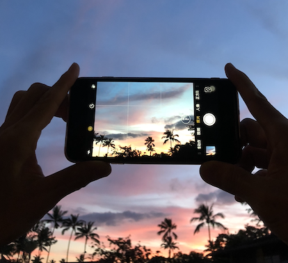

Hi, my name is Kelly. I was born and raised in Honolulu, Hawaii.
Hawaii is a popular travel destination all year long and heres why:
Hawaii is a great place to enjoy amazing scenery. It's perfect for people who love the great outdoors. Manoa Falls is a popular trail among both tourist and locals, but if you're in for a challenge, The Stairway to Heaven is the hike for you. There's many beaches and hikes to explore while you're here!
Hawaii is known for it's tropical sunny weather all 4 seasons! The average weather in about 80 degrees fahrenheit and it never snows. It's the perfect weather for going to the beach all year long. Just please don't forget to wear lots of sunscreen!
Locals and tourists love getting fresh poke bowls and garlic shrimp plates! Kalua pork, chicken long rice, and poke are some of my favorite traditional Hawaiian dishes. Hawaii is actually a very diverse place, so you can also find plenty of authentic asian food here.